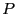
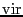
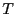

Next: Free Energy Methods
Up: Ensembles
Previous: The Nosé-Hoover Chain
As with temperature control, there are different classes of pressure
control for MD simulation. The only one we consider here is the length-scaling
technique of Berendsen. It should be noted that one can also use
the the extended Nosé-Hoover (extended Lagrangian)
formalism of Martyna, which is mentioned in F&S; in the interest of time, we
will forego a discussion of this technique.
Here we consider implementation of the Berendsen
barostat [10]. Recall that the working definition of
instantaneous pressure, , is given by:
 |
(196) |
where  is the virial:
 |
(197) |
and  is the system volume.
is the system volume.
 is the
force exerted on particle
is the
force exerted on particle  by particle
by particle  .
.
Consider a cubic system, where . The Berendsen barostat uses
a scale factor,  , which is a function of , to scale lengths in
the system:
, which is a function of , to scale lengths in
the system:
is given by
Here,  is the integrator time-step, is the ``rise
time'' of the barostat, and is the setpoint pressure. Berendsen
discusses the tensor-based analog for non-cubic
systems [10].
is the integrator time-step, is the ``rise
time'' of the barostat, and is the setpoint pressure. Berendsen
discusses the tensor-based analog for non-cubic
systems [10].
The code mdlj_berp.c
implements
the Berendsen barostat. Below, I show results of using the
Berendsen barostat to induce a pressure jump from 1.0 to 6.0
in a sample of LJ fluid, for various values of the rise time, .
Notice that temperature is not controlled, but rises from about 1.3 to 2.5
due to the increase of pressure.
|
|
Instantaneous pressure, , vs. time (upper), and Instantaneou
temperature, , vs. time (lower) in an MD simulation
of 256 particles at a density of 0.8442, using the Berendsen
barostat [ 10] to impose an instantaneous pressure
jump from 1.0 to 6.0. Each curve corresponds to a different
value of the rise time, .
|
|
Length scaling at each time step using a global scale factor, while
effective in this instance, can be lead to violent oscillations of
pressure in more ordered systems, and is therefore not recommended for
production MD runs. However, it is common to find length scaling
barostats used in the literature without reporting how effective they
are, measured at least in terms of pressure and its fluctuations. But
they can be useful for pre-equilibrating samples at some prior to
beginning an NVE simulation during which one hopes the instantaneous
pressure fluctuates about the previous setpoint. It is easy to
implement both the Berendsen thermostat and barostat in the same
simulation program, to allow pre-equilibration at setpoint and .
Next: Free Energy Methods
Up: Ensembles
Previous: The Nosé-Hoover Chain
cfa22@drexel.edu